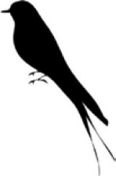

IRMAK KIYISINDAKI İKİ KUŞ
Irmağın iki kıyısında birer hurma ağacı var, biri 30 m, diğeri 20 m yükseklikte. Ağaçların dipleri arasındaki uzaklık 50 m. Her iki ağacın tepesinde birer kuş var. Birden iki kuş da ırmakta bir balık görüp üzerine uçuyor ve aynı zamanda balığa varıyorlar. Uzun hurma ağacının balığa olan uzaklığını bulunuz.
Cevap:
AB2 =302 + x2
AC2 = 202 + (50 - x)2
AB = AC (kuşlar aynı zamanda balığa varıyorlar)
302 + x2 = 202 + (50 - x)2
Buradan x = 20 metre bulunur.
